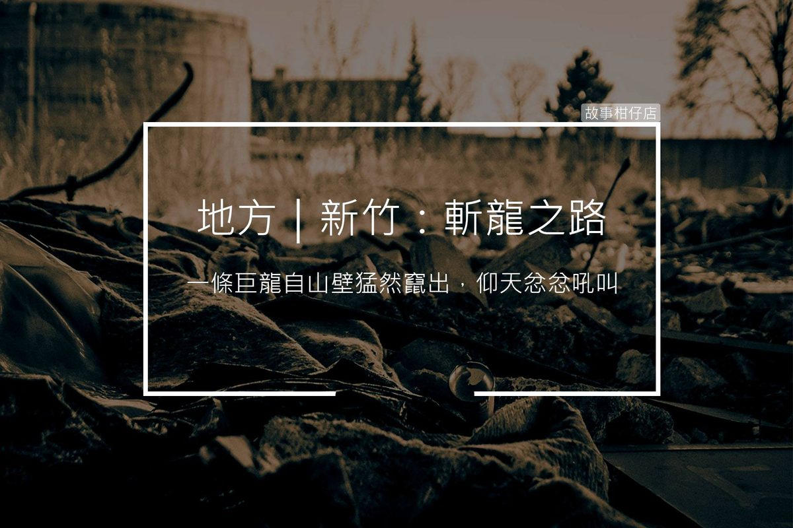

新竹：斬龍之路
2018-03-22

相傳日治時期因北埔與竹東間阻礙難行，日本政府遂進行開路工程，卻死傷頻傳，請來道士作法，巨龍現形鏖戰，遭到道士砍頭。此路段即是現今省道台三線新竹縣北埔鄉的分水龍路段，又被老一輩稱為「斬龍」。
〈新竹：斬龍之路〉
車子行經蜿蜒的分水龍路段，土火抓緊扶手頻頻要兒子開慢點，免得碾到蛇。
「爸，這裡怎會有蛇，你放心啦！」阿昌熟練轉著方向盤說道。
土火懶得爭論，靜靜看著窗外。
好多年前，這裡還是一大片連牛車都難以通過的黃石坡，日本政府下令開拓，但每當有工人死傷，隔天路面又會堵上更多大石與傾倒樹枝，嚴重阻礙開路工程。
日本人恐怕是走投無路了。那天身穿黑袍的道士在土坡中央擺起一壇，手持七星劍喃喃有詞，燒畢三張符紙，他大喝一聲，往空中灑出一把鐵釘。
突然間，大小碎石自兩邊山壁滾滾落下，連筆挺制服的日本大人都抱頭逃竄，圍觀群眾一片驚呼，唯有道士繼續焚燒符紙，道袍在陰風中颯颯飄揚。
年僅七歲的土火伸長脖子擠在人群裡睜大眼，看見居然有一條七彩鱗片的巨龍自山壁間猛然竄出，搖擺龍尾掃翻道壇，仰天忿忿吼叫。
只見道士口含米酒往七星劍噴去，他紮穩馬步，咒語愈念愈快，突然縱身一跳，一劍砍落龍頭，巨龍重摔在地，翼爪消失，幻化成奄奄一息的巨蟒。
巨蟒痛苦扭動將頭靠近尾巴，牠圈起的身軀中，一窩小蛇正嘶嘶吐信。隨著巨蟒逐漸停止喘息，小蛇也斷了呼吸。
不到半年，分水龍路段開拓工程便順利完成。
都過幾十年啦，日本人都走了，這個路段依舊意外頻傳。土火相信，是當年斬龍遺下的冤氣。
阿昌邊哼歌邊控制著方向盤，車身卻冷不防震了一下，他探出頭去看，車輪下赫然躺著一隻小蛇。
遠方天邊傳來一聲轟然雷響，土火瞪大雙眼，搖晃著一頭白髮焦急喊著：「快走！快走！」
每個黃昏時刻，
讓故事柑仔店
為您說說地方的故事。